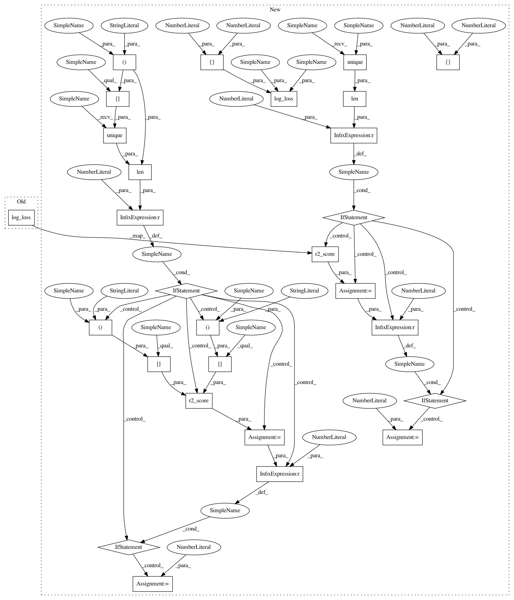

399277422dc4be4592df305b94d59b889a74e7ba,delft/textClassification/wrapper.py,Classifier,eval,#Classifier#Any#Any#,182
Before Change
if len(self.model_config.list_classes) is 1:
total_accuracy = accuracy_score(y_test, result_binary)
total_f1 = f1_score(y_test, result_binary)
total_loss = log_loss(y_test, result)
total_roc_auc = roc_auc_score(y_test, result)
else:
for j in range(0, len(self.model_config.list_classes)):
accuracy = accuracy_score(y_test[:, j], result_binary[:, j])
After Change
if len(self.model_config.list_classes) is 1:
total_accuracy = accuracy_score(y_test, result_binary)
total_f1 = f1_score(y_test, result_binary)
total_loss = log_loss(y_test, result, labels=[0,1])
if len(np.unique(y_test)) == 1:
// roc_auc_score sklearn implementation is not working in this case, it needs more balanced batches
// a simple fix is to return the r2_score instead in this case (which is a regression score and not a loss)
total_roc_auc = r2_score(y_test, result)
if total_roc_auc < 0:
total_roc_auc = 0
else:
total_roc_auc = roc_auc_score(y_test, result)
else:
for j in range(0, len(self.model_config.list_classes)):
accuracy = accuracy_score(y_test[:, j], result_binary[:, j])
total_accuracy += accuracy
f1 = f1_score(y_test[:, j], result_binary[:, j], average="micro")
total_f1 += f1
loss = log_loss(y_test[:, j], result[:, j], labels=[0,1])
total_loss += loss
if len(np.unique(y_test[:, j])) == 1:
// roc_auc_score sklearn implementation is not working in this case, it needs more balanced batches
// a simple fix is to return the r2_score instead in this case (which is a regression score and not a loss)
roc_auc = r2_score(y_test[:, j], result[:, j])
if roc_auc < 0:
roc_auc = 0
else:
roc_auc = roc_auc_score(y_test[:, j], result[:, j])
total_roc_auc += roc_auc
print("\nClass:", self.model_config.list_classes[j])
print("\taccuracy at 0.5 =", accuracy)
print("\tf-1 at 0.5 =", f1)
In pattern: SUPERPATTERN
Frequency: 4
Non-data size: 28
Instances
Project Name: kermitt2/delft
Commit Name: 399277422dc4be4592df305b94d59b889a74e7ba
Time: 2019-12-04
Author: patrice.lopez@science-miner.com
File Name: delft/textClassification/wrapper.py
Class Name: Classifier
Method Name: eval
Project Name: kermitt2/delft
Commit Name: 06e8445908364c488e22c936c397acf73f19fbd7
Time: 2019-08-10
Author: patrice.lopez@science-miner.com
File Name: delft/textClassification/wrapper.py
Class Name: Classifier
Method Name: eval
Project Name: kermitt2/delft
Commit Name: 399277422dc4be4592df305b94d59b889a74e7ba
Time: 2019-12-04
Author: patrice.lopez@science-miner.com
File Name: delft/textClassification/wrapper.py
Class Name: Classifier
Method Name: eval
Project Name: kermitt2/delft
Commit Name: 399277422dc4be4592df305b94d59b889a74e7ba
Time: 2019-12-04
Author: patrice.lopez@science-miner.com
File Name: delft/textClassification/models.py
Class Name:
Method Name: train_model
Project Name: kermitt2/delft
Commit Name: 06e8445908364c488e22c936c397acf73f19fbd7
Time: 2019-08-10
Author: patrice.lopez@science-miner.com
File Name: delft/textClassification/models.py
Class Name:
Method Name: train_model